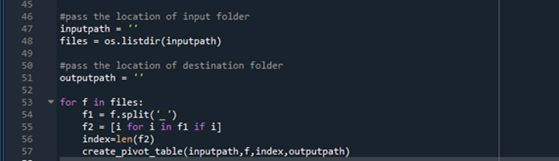
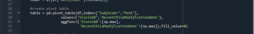
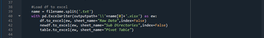

Ageing Analysis Guide: A quick start template #
Overview #
The inventory Ageing analysis for any application determines the storage duration of a file, folder or data inside that. The main purpose is to find out which files, folders stay in inventory for a long time or are perhaps becoming obsolete. This also identifies the active and inactive folders in the applications from Gen1 Data Lake using directory details such as recent child modification date and size. The purpose of this document is to provide a manual in the form of step by step guide for the Ageing analysis which can be done before the actual data migration during the Assessment phase. As such it provides the directions, references, sample code examples of the PowerShell functions and python code snippets been used.
This guide covers the following tasks:
- Inventory collection of application folders
- An insight to ageing analysis using inventory list
- Creation of Ageing analysis to single pivot sheet using python snippet
Considerations for using the ageing analysis approach:
- Planning Cutover from Gen1 to Gen2 for all workloads at the same time.
- Determining hot, cold tiers of applications. Refer here for more details.
- Ideal for all applications from Gen1 (Blob Storage) to be migrated or also critical applications where the migration need to be managed.
- Purging can be done as part of Cost reduction
Prerequisites #
-
Active Azure Subscription
-
Azure Data Lake Storage Gen1
-
Azure Key Vault. Required keys and secrets to be configured here.
-
Service principal with read, write and execute permission to the resource group, key vault, data lake store Gen1 and data lake store Gen2. To learn more, see create service principal account and to provide SPN access to Gen1 refer to SPN access to Gen1
-
Windows PowerShell ISE.
-
Python IDE.
Note: Run as administrator
//Run below code to enable running PS files Set-ExecutionPolicy Unrestricted //Check for the below modules in PowerShell . If not existing, install one by one: Install-Module Az.Accounts -AllowClobber -Force Install-Module Az.DataFactory -AllowClobber -Force Install-Module Az.KeyVault -AllowClobber -Force Install-Module Az.DataLakeStore -AllowClobber -Force Install-Module PowerShellGet –Repository PSGallery –Force //Close the PowerShell ISE and Reopen as administrator. Run the below module Install-Module az.storage -RequiredVersion 1.13.3-preview -Repository PSGallery -AllowClobber -AllowPrerelease -Force
Limitations #
This version of code will have below limitations:
- Supports only for Gen1 Locations
- Inventory Code Developed and Supported only in Windows PowerShell ISE
- Pivot Code developed and supported only in python
- Manual intervention is required to analysis application folders patterns
Ageing Analysis Setup #
This section will help you with the steps needed to set up the framework and get started with the ageing analysis process.
Get Started #
Download the migration source code from here to local machine:
Note: To avoid security warning error –> Right click on the zip folder downloaded –> Go to –> Properties –> General –> Check unblock option under security section. Unzip and extract the folder.
The folder will contain below listed contents:
- Inventory: This folder will have PowerShell code for inventory analysis of Applications
- Pivot: This Folder contains the python code snippet for pivot sheet generation from PowerShell output
- Sample Pivot: This Folder contains sample pivot data sheet
How to Set up Configuration file #
Important Prerequisite:
Below is the code snapshot of ADLS connection:
"gen1SourceRootPath" : "<<Enter the Gen1 source root path>>",
"outPutPath" : "<<Enter the path where the results needs to store>>",
"tenantId" : "<<Enter the tenantId>>",
"subscriptionId" : "<<Enter the subscriptionId>>",
"servicePrincipleId" : "<<Enter the servicePrincipleId>>",
"servicePrincipleSecret" : "<<Enter the servicePrincipleSecret Key>>",
"dataLakeStore" : "<<Enter the dataLakeStore name>>"
Setting up the connection to azure for inventory collection:
$SecurePassword = ConvertTo-SecureString $ServicePrincipalKey -AsPlainText -Force
$Credential = New-Object System.Management.Automation.PSCredential ( $ServicePrincipalId, $SecurePassword)
Login-AzAccount -ServicePrincipal -TenantId $TenantId -Credential $Credential
Inventory Collection using PowerShell #
Run the script Inventory.ps1 which will trigger the inventory collection process.
- The Inventory PowerShell script collects inventory details of given Application folder
- The PowerShell code is run with minimum folder depth, especially for Large applications
- The code exports .txt file with inventory details including Size, Files count, Directory Count, Last Modification Time within the given depth level
- The generated result is in txt file, saved into the Output folder
- The output file is further analyzed for determining the ageing analysis approach for identifying active and inactive folders
Ageing Analysis Approach #
Below is the approach on the ageing analysis using this PowerShell script:
- The objective of Ageing Analysis is to find Active and Inactive Folders in an application
- Majorly Ageing analysis approach is done by considering the size of the folder and recent child modification time
- The Analysis is done on the inventory data output file extracted from the PowerShell code
- The sub folders in the application is identified based on Active and storage strategy or user requirements
- The sub folder paths are given as input to PowerShell Inventory code and exported the Datasheet csv file
Ageing Analysis Datasheet #
- The Datasheet is the output of inventory PowerShell code
- The sub folders or application path is derived from analysis based on storage, Active or user requirements
- The Data sheet are given as input to python snippet and final pivot table is created
- The Data sheet differs from analysis approach for a single application
Pivot Sheet using python snippet #
Run python script PivotSheetGeneration.py for pivot sheet generation. Below are the steps how this script works:
- The python script is used for the generating pivot table in .xlsx document
- The Datasheets from multiple applications are placed in the output folder, python snippet takes the csv files as input and create Data pivot sheets respectively
- The input and output path are provided by the user. Python snippet read all the files present in the input folder and calls the create pivot table function

The Code snippet to generate the pivot table

The Final pivot Datasheet is created and saved in the same output folder.
